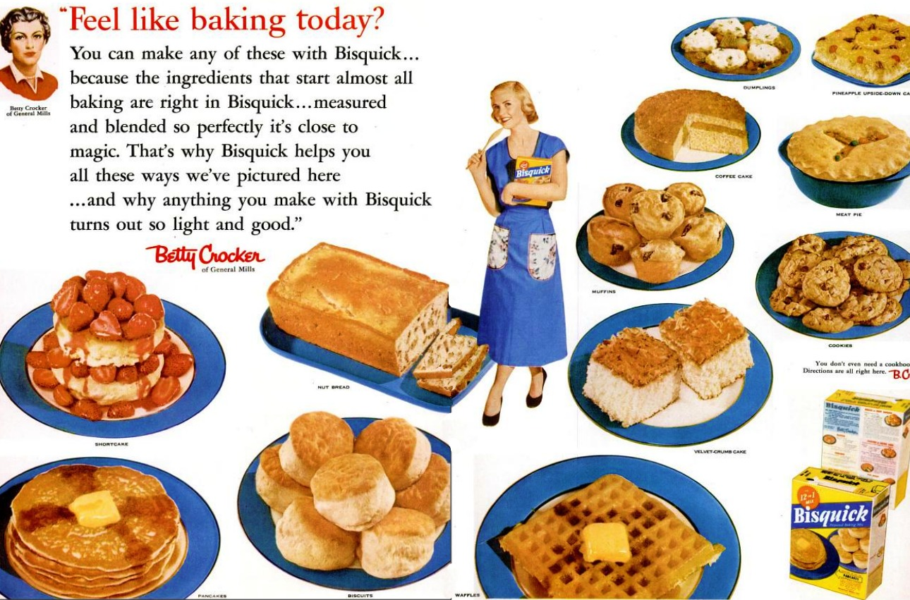

      <section class="theme-invert">
        <h2 hidden aria-hidden="false">Bisquick</h2>
        <figure>
          <a href="https://www.tastecooking.com/the-thing-about-bisquick/">
          
          </a>

          <figcaption>
            <p>
            
            </p>

          </figcaption>
        </figure>
      </section>
